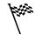
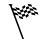

Warning
This document is in the middle of a major revision. Some sections might be missing text, or have French text as placeholder.
지금까지 작성한 프로그램은 Tokens 1 과 Tokens 2 세상에서 동작하지만, Tokens 3 과 Tokens 4 세상에 시도해 보면 정상 작동하지 않는다.
시도해 보기!
4가지 세상 모두에서 작성한 프로그램을 시도해 보라.
Note
at_goal():  

리보그가 스스로 찾을 수 있는 장소에 토큰이 위치했는지 찾아낼 수 있는 것에 더해서,
리보그 집으로 이전에 기술한 색칠된 정사각형에 도달할 수 있는지 리보그 스스로 판단할 수도 있다.
많은 세상에서, 이곳을 집도다 리보그 목적지로 간주하는 것이 더 일리가 있다.
리보그가 목적지로 판단하는데 사용하는 함수가 at_goal() 이다.
다음에 이전에 언급된 4가지 세상 모두에서 동작하는 해법에 대한 개괄적인 개요가 나와있다.
def move_until_done():
if at_goal():
# 무언가 수행한다.
move()
if object_here():
# 무언가 수행한다.
# 다른 무언가 수행한다.
# 다시 다른 무언가 수행한다.
repeat 42:
move_until_done()
(파이썬 코드 편집기에서) 상기 코드를 완성하시오. 위에서 언급된 4가지 세상 모두에서 동작하는지 확인하시오.
상기 연습문제를 분명히 완수했죠, 그렇지 않나요? ... 훌륭합니다.
이것을 해보세요!
세상 Home 1 혹은 Home 2 중에서 하나를 선택하세요. Tokens 세상에서 사용한 동일한 프로그램이 동작합니까? 그런지 알아본 후에, 이해한 것을 확인하도록 실행해 보세요.
Hurdles 1 와 Hurdles 2 세상을 살펴본다.
잠시 최종 목적을 무시하고, 장애물을 넘어 리보그가 달려가는 프로그램은 다음 두 명령어를 번갈아 실행한다.
적절한 jump_over_hurdle() 함수에 대한 적절한 정의가 수반되어야만 된다.
move()jump_over_hurdle()목적지에 도달했는지 알아보기 위해서 특정 지점에 테스트 (if 문장) 를 포함한다면,
새로운 함수를 만드는데 상기 함수를 사용할 수 있다.
새로운 함수는 move_and_jump_until_done() 호출해서
Hurdles 1 와 Hurdles 2 세상 모두에 절절한 프로그램이 될 것이다:
repeat 42:
move_and_jump_until_done()
직접 작성해보자!
언급한 프로그램을 작성하고 제대로 동작하도록 확실히 한다.
Hint
작성한 프로그램은 다음과 같아 보일 수 있다:
from my_lib import turn_right
def jump_over_hurdle():
# 무언가 수행한다.
def move_and_jump_until_done():
# 무언가 수행한다.
if at_goal():
done()
# 무언가 수행한다.
repeat 42:
move_and_jump_until_done()
Hurdles 3 세상에 대해 어떤 것도 변경하지 않고 해당 프로그램이 동작합니까?